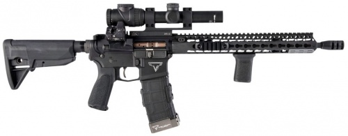
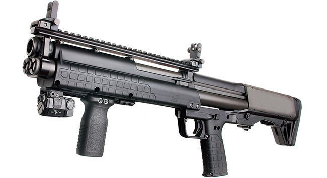

John Wick's signature gun, a Heckler and Koch 9mm P30L with a match compensator.
Mr. Wick's TR-1 Ultralight 5.56x45mm AR-15, eqquiped with a Trijicon Accupoint optic.
A Kel-Tec KSG, a bullpup shotgun firing 15 12-Gauge rounds, by pump action; used to stop Mr. Viggo Tarasov.